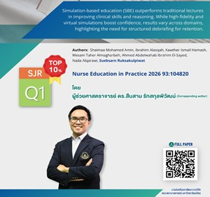
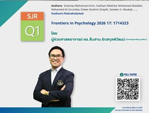
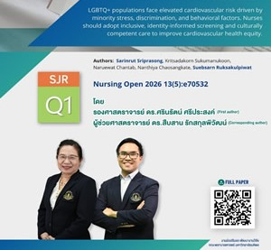
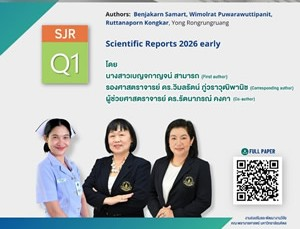
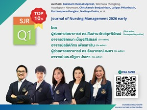

EN
EN

ขอแสดงความยินดี แด่ ผู้ช่วยศาสตราจารย์ ดร.สืบสาน รักสกุลพิวัฒน์ และ อาจารย์ ดร.ชิดชนก เบ็ญจสิริสรรค์
ในโอกาสได้รับทุนสนับสนุนการวิจัย 2026 Internal Research MCR and Senior Researcher Grant Funding Scheme with University of Technology at Sydney โครงการ “Thai Post-Stroke Fatigue Questionnaire Adaptation and Pilot Study” จำนวน 10,000 AUD

ขอแสดงความยินดี แด่ อาจารย์ ดร.ณัฏยา ประหา (หัวหน้าโครงการฯ) รองศาสตราจารย์ ดร.อรวมน ศรียุกตศุทธ และ ผู้ช่วยศาสตราจารย์ ดร.วารุณี พลิกบัว
ในโอกาสได้รับทุนสนับสนุนการวิจัย ประจำปีงบประมาณ 2569 กองทุน ซี.เอ็ม.บี.คณะพยาบาลศาสตร์ โครงการ “คุณภาพชีวิตและปัจจัยที่เกี่ยวข้องในผู้ป่วยฟอกเลือดด้วยเครื่องไตเทียม : การศึกษาเปรียบเทียบตามระยะเวลาการฟอกเลือดที่แตกต่างกัน” จำนวนเงิน 126,599 บาท

ขอแสดงความยินดี แด่ รองศาสตราจารย์ ดร.อัจฉริยา พ่วงแก้ว
ในโอกาสได้รับทุนสนับสนุนการวิจัยจาก มหาวิทยาลัยมหิดล ประจำปีงบประมาณ 2569 ทุนยุทธศาสตร์วิจัย (Strategic Research Fund) ประเภท Rising ในโครงการ “การออกแบบและพัฒนาเครื่องจ่ายยาอัตโนมัติและระบบบริหารยาเพื่อเสริมสร้างความปลอดภัยในการใช้ยาสำหรับผู้สูงอายุ” จำนวนเงิน 750,000 บาท

ขอแสดงความยินดี แด่ ผู้ช่วยศาสตราจารย์ ดร.สืบสาน รักสกุลพิวัฒน์
เนื่องในโอกาสได้รับการตีพิมพ์ในวารสารนานาชาติ Bridging theory and practice: A systematic review of simulation-based education in nursing. Simulation-based education (SBE) outperforms traditional lectures in improving clinical skills and reasoning. Authors: Suebsarn Ruksakulpiwat, Nurse Education in Practice 2026 93:104820, SJR Q1 TOP 10%

ขอแสดงความยินดี แด่ ผู้ช่วยศาสตราจารย์ ดร.สืบสาน รักสกุลพิวัฒน์
เนื่องในโอกาสได้รับการตีพิมพ์ในวารสารนานาชาติ The influence of fear of hypoglycemia and frailty on self-efficacy in diabetes management among older adults with type 2 diabetes: a cross-sectional study. Authors: Suebsarn Ruksakulpiwat, Frontiers in Psychology 2026 17: 1714323, SJR Q1

ขอแสดงความยินดี แด่ รองศาสตราจารย์ ดร.ศรินรัตน์ ศรีประสงค์ และ ผู้ช่วยศาสตราจารย์ ดร.สืบสาน รักสกุลพิวัฒน์
เนื่องในโอกาสได้รับการตีพิมพ์ในวารสารนานาชาติ Determinants of cardiovascular disease risk among LGBTQ+ populations: A systematic review of empirical evidence. Authors: Sarinrut Sriprasong, Suebsarn Ruksakulpiwat, Nursing Open 2026 13(5): e705532, SJR Q1

ขอแสดงความยินดี แด่ รองศาสตราจารย์ ดร.วิมลรัตน์ ภู่วราวุฒิพานิช และ ผู้ช่วยศาสตราจารย์ ดร.รัตนาภรณ์ คงคา
เนื่องในโอกาสได้รับการตีพิมพ์ในวารสารนานาชาติ Effects of a program to reduce fatigue among sepsis survivors: A randomized controlled trial. Authors: Wimolrat Puwarawuttipanit, Ruttanaporn Kongkar, Scientific Reports 2026 early, SJR Q1

ขอแสดงความยินดี แด่ ผู้ช่วยศาสตราจารย์ ดร.สืบสาน รักสกุลพิวัฒน์, อาจารย์ ดร.ชิดชนก เบ็ญจสิริสรรค์, อาจารย์ลลิต์ภัทร เพียรหาสิน, ผู้ช่วยศาสตราจารย์ ดร.รัตนาภรณ์ คงคา และ อาจารย์ ดร.ณัฏยา ประหา
เนื่องในโอกาสได้รับการตีพิมพ์ในวารสารนานาชาติ Associations between nursing faculty expertise in the United Nations sustainable development goals and research impact metrics: A cross-sectional study. Authors: Suebsarn Ruksakulpiwat, Chitchanok Benjasirisan, Lalipat Phianhasin, Ruttanaporn Kongkar, Nattaya Prahs, et al. Journal of Nursing Management 2026 early, SJR Q1 TOP 10%

ขอแสดงความยินดี แด่ อาจารย์จิณห์สุตา ทัดสวน
CONGRATULATIONS MISS JINSUTA TADSUAN (Alumni, MN International Program) - Recipient of the OUTSTANDING GRADUATE PERFORMANCE AWARD TAIWAN SCHOLARSHIP AND HUAYU ENRICHMENT SCHOLARSHIP. Selected Nationally as Representative of NTU

ขอแสดงความยินดีกับ รองศาสตราจารย์ ดร.อัจฉริยา พ่วงแก้ว
ในโอกาสที่ผลงานวิจัยได้รับการคัดเลือกเข้าร่วมโครงการบ่มเพาะเทคโนโลยีสู่นวัตกรรมระดับสูง Mahidol Tech Studio "เตียงอัจฉริยะเลื่อนปรับตำแหน่งและพลิกตัวผู้ป่วยอัตโนมัติ"

ขอแสดงความยินดี แด่ อาจารย์ ดร.ชิดชนก เบ็ญจสิริสรรค์
ได้รับการตีพิมพ์วารสารระดับนานาชาติ Smartphone-based ecological momentary assessment of pain in older adults undergoing auricular point acupressure for chronic low back pain: secondary analysis of a randomized controlled trial. Authors: Nada Lukkahatai, Chitchanok Benjasirisan, et al. JMIR Formative Research 2026 10:e79612, SJR Q2

ขอแสดงความยินดี แด่ รองศาสตราจารย์ ดร.วิมลรัตน์ ภู่วราวุฒิพานิช
ในโอกาสผ่านการประเมินระดับคุณภาพการจัดการเรียนการสอนตามเกณฑ์มาตรฐานคุณภาพอาจารย์ของมหาวิทยาลัยมหิดล Mahidol University Professional Standards Framework: MUPSF ระดับ 2

ขอแสดงความยินดี กับรองศาสตราจารย์ ดร.อัจฉริยา พ่วงแก้ว ในโอกาสได้รับการขึ้นทะเบียน อนุสิทธิบัตร การประดิษฐ์ เรื่อง “กระบวนการบริหารและติดตามการใช้ยาวอร์ฟารินทางไกล”

ขอแสดงความยินดี แด่ ผู้ช่วยศาสตราจารย์ ดร.สืบสาน รักสกุลพิวัฒน์ ในโอกาสได้รับการจัดอันดับให้เป็น 1 ใน Mahidol University’s Top 100 Researcher 2026 ประจำปี พ.ศ.2569

ขอแสดงความยินดี แด่ รองศาสตราจารย์ ดร.ศรินรัตน์ ศรีประสงค์ ในโอกาสได้รับการรับรอง Senior Fellow (SFHEA)
จาก Advance HE สะท้อนถึงความเชี่ยวชาญและความเป็นเลิศด้านการเรียนการสอนในระดับอุดมศึกษาอย่างเป็นสากล

ขอแสดงความยินดี แด่ อาจารย์ ดร.สืบสาน รักสกุลพิวัฒน์ เนื่องในโอกาสได้รับแต่งตั้งให้ดำรงตำแหน่ง ผู้ช่วยศาสตราจารย์ ในสาขาวิชา พยาบาลศาสตร์

ขอแสดงความยินดี แด่ รองศาสตราจารย์ ดร.อัจฉริยา พ่วงแก้ว และ รองศาสตราจารย์ ดร.พรรณิภา บุญเทียร
ในโอกาสได้รับทุนอุดหนุนการวิจัยและนวัตกรรม ประจำปีงบประมาณ 2569 จาก สำนักงานวิจัยแห่งชาติ (วช.) โครงการ “ประสิทธิผลของคลินิกวอร์ฟารินทางไกล ต่อผลลัพธ์ทางสุขภาพความรู้ ความร่วมมือในการใช้ยา และคุณภาพชีวิตของผู้สูงอายุ” จำนวนเงิน 3,285,000 บาท

ขอแสดงความยินดี แด่ รองศาสตราจารย์ ดร.พิจิตรา เล็กดำรงกุล ในโอกาสได้รับทุนสนับสนุนการวิจัย ประจำปีงบประมาณ 2569
จาก สถาบันวิจัยระบบสาธารณสุข (สวรส.) โครงการ “การประเมินประสิทธิผลของการใช้แนวปฏิบัติสากลในการคัดกรองความเสี่ยงมะเร็งเต้านมทางพันธุกรรมในผู้ป่วยไทย” จำนวนเงิน 860,000 บาท

ขอแสดงความยินดี แด่ อาจารย์ลลิต์ภัทร เพียรหาสิน เนื่องในโอกาสได้รับสนับสนุนการวิจัย จาก Sigma
โครงการ “Role of Social as a Social Determinant of Health in Functional Status and Cognitive Function among Aneurysmal Subarachnoid Hemorrhage Survivors” จำนวน $5000

ขอแสดงความยินดี แด่ ผู้ช่วยศาสตราจารย์ ดร.พิจิตรา เล็กดํารงกุล (corresponding author), อาจารย์ ดร.สืบสาน รักสกุลพิวัฒน์ และ อาจารย์จิณห์สุตา ทัดสวน
ได้รับการตีพิมพ์ในวารสารระดับนานาชาติ TOP 10% SJR Q1 "Understanding the factors influencing quality of life among survivors of Non-Hodgkin lymphoma after completing primary treatment: A systematic review..."

ขอแสดงความยินดี รองศาสตราจารย์ ดร.พรรณิภา บุญเทียร เนื่องในโอกาสได้รับสนับสนุนทุนวิจัย ในโครงการส่งเสริมการวิจัยทางการศึกษา มหาวิทยาลัยมหิดล ประจำปี 2569
หัวข้อวิจัย “การออกแบบและพัฒนาชุดการเรียนรู้ด้วยตนเองผ่านสถานการณ์จำลองเสมือนจริง เพื่อยกระดับความสามารถในการแก้ปัญหาและความเชื่อมั่นในตนเอง: สู่การขยายผลให้หลักสูตรพยาบาลศาสตรบัณฑิต”

อาจารย์ ดร.สืบสาน รักสกุลพิวัฒน์ ได้รับการตีพิมพ์วารสารระดับนานาชาติ SJR Q2
HIV in Iraq: Key populations, sociodemographic, transmission modes, present realities, and urgent next steps: A systematic review. Chronic Illness 2026 Early.

อาจารย์ ดร.ชิดชนก เบ็ญจสิริสรรค์ ได้รับการตีพิมพ์วารสารระดับนานาชาติ SJR Q1 TOP10%
Acupuncture and acupressure for cancer symptom management: an opinion statement based on preliminary evidence mapping. Current Treatment Options in Oncology 2026 27:5.

ขอแสดงความยินดี แด่ อาจารย์ ดร.สิริกาญจน์ หาญรบ ในโอกาสได้รับรางวัล ศิษย์เก่ารุ่นใหม่ดีเด่น
(Mahidol University Young Alumni Awards 2026) จาก สมาคมศิษย์เก่ามหาวิทยาลัยมหิดล ในพระราชูปถัมภ์

ขอแสดงความยินดี แด่ ผู้ช่วยศาสตราจารย์ ดร.ศรัณยา โฆสิตะมงคล
เนื่องในโอกาสได้รับการเลือกตั้งเป็น กรรมการประจำคณะจากคณาจารย์ประจำ